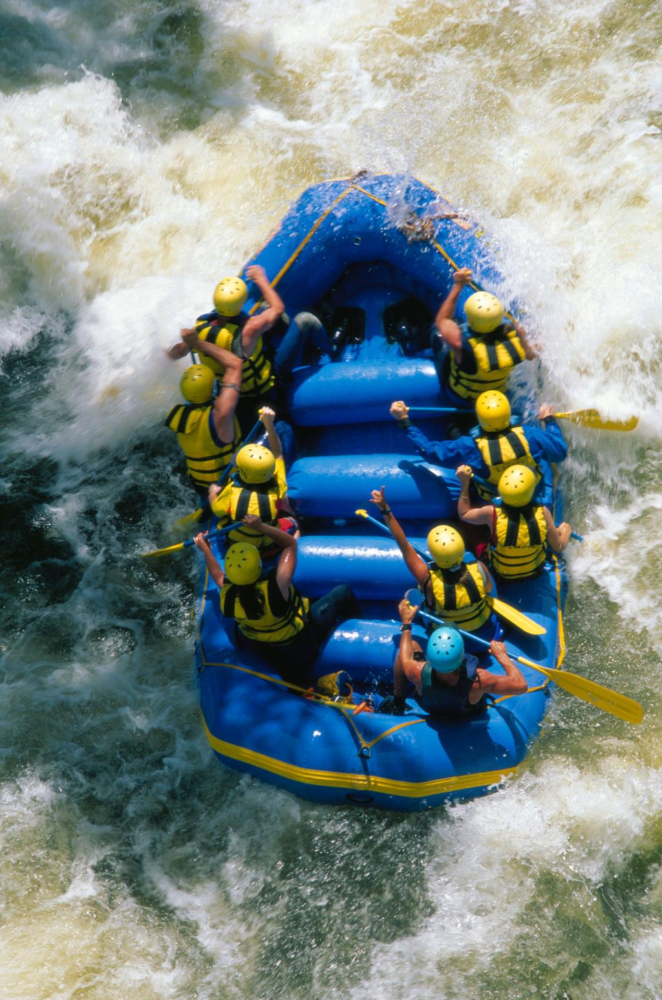
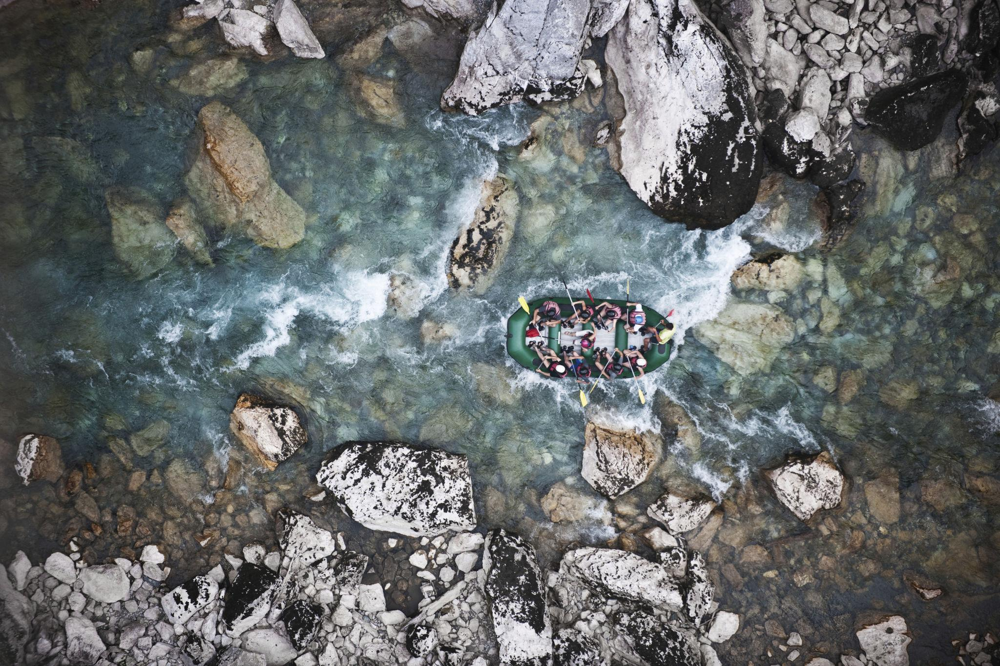
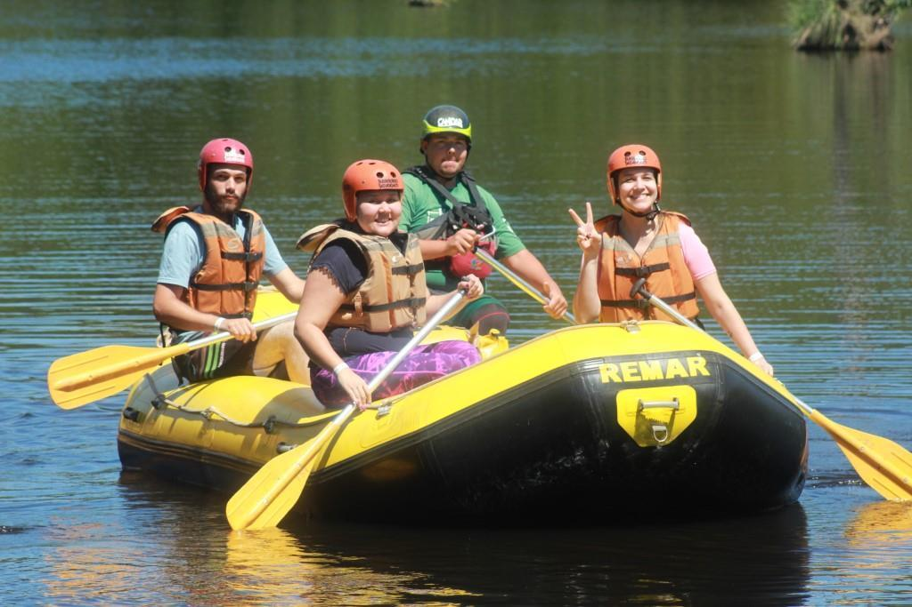

Rafting Familiar
Um passeio tranquilo para famílias e iniciantes, com corredeiras leves e belas paisagens.


Nossa equipe está pronta para ajudar você a escolher o passeio perfeito.
Entre em Contato
Um passeio tranquilo para famílias e iniciantes, com corredeiras leves e belas paisagens.

Perfeito para quem procura emoção moderada e muita diversão em grupo.

Corredeiras intensas e muita adrenalina para os aventureiros mais experientes.
| Passeio | Duração | Dificuldade | Idade Mínima | Preço |
|---|---|---|---|---|
| Rafting Familiar | 2 horas | Fácil | 8+ | R$120 |
| Aventura no Rio | 4 horas | Média | 12+ | R$220 |
| Desafio Extremo | 6 horas | Alta | 16+ | R$350 |